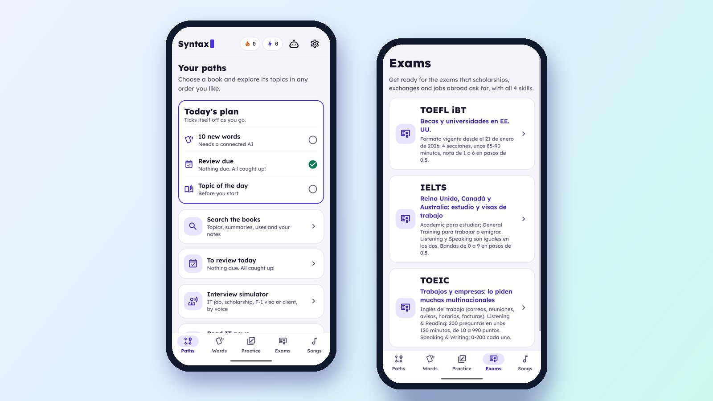

New · Personal projectNuevo · Proyecto personal
Syntax — English appSyntax — app de inglés
Android app to practice English grammar and vocabulary: 3 books turned into 308 topics and 5,700+ practice items, written exercises checked by AI, and TOEFL, IELTS and TOEIC practice. The interface is in English and the explanations in Spanish, for Spanish-speaking learners.
App de Android para practicar gramática y vocabulario en inglés: 3 libros convertidos en 308 temas y más de 5,700 ejercicios, escritura revisada con IA y práctica para TOEFL, IELTS y TOEIC. La interfaz está en inglés y las explicaciones en español, pensadas para hispanohablantes.
My role: sole developer, from design to React Native and Kotlin code and 540+ automated tests. Hardest part: validating every AI response before the learner sees it.
Mi papel: único desarrollador, del diseño al código en React Native y Kotlin y más de 540 pruebas automáticas. Lo más difícil: validar cada respuesta de la IA antes de que la vea quien estudia.